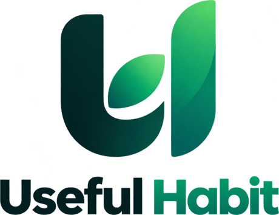

Дякуємо!
Вашу заявку успішно прийнято.
Менеджер зв'яжеться з вами протягом 10-15 хвилин.
Щоб менеджер зміг швидко до вас додзвонитися:
- тримайте телефон поруч і з увімкненим звуком;
- підготуйте запитання щодо складу та правил прийому.

Useful Habit 2026
Вашу заявку успішно прийнято.
Менеджер зв'яжеться з вами протягом 10-15 хвилин.
Щоб менеджер зміг швидко до вас додзвонитися: